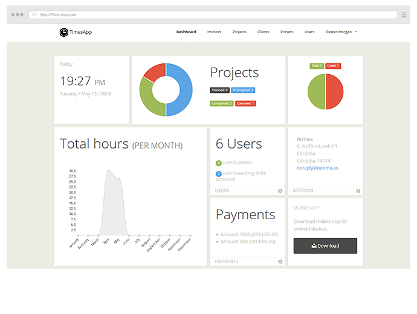
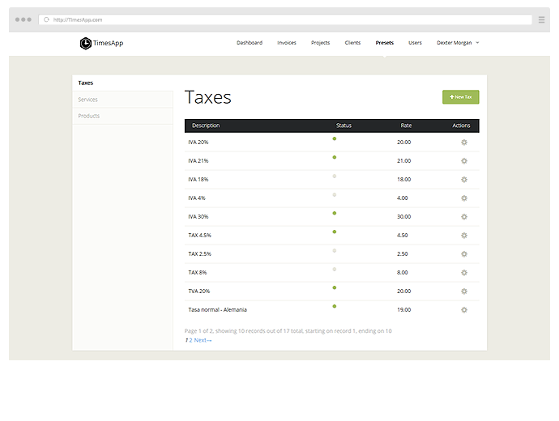
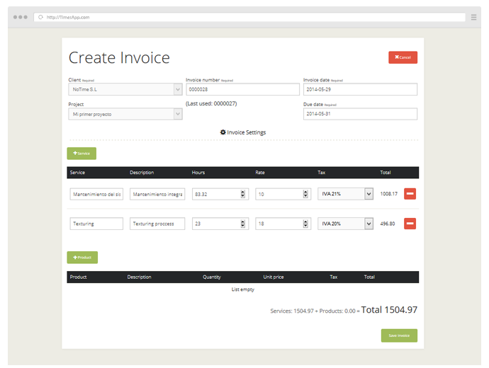

TimesApp is perfect for people who are seeking an web app to allow them keep tracking their time, focused on freelancers and small business. We know there's a lot of projects that do the same dammit thing, but you know? This project it's completly free of charge and Open Source under MIT License. So, What are you waiting for to try?
A dashboard to rule them all!
Dashboard let's you know whats going on with one look.
Make your time count
Track the time you spent working. Now you got several ways to add your time with the build in timer, by hand or even with the client app for Android devices.

Create your own presets
Times App allows you to create three different presets to make your invoicing process easier. Taxes, Services and Products.
Don't waste your time on boring stuff
Create invoices from existing projects or from scratch, send them via email to your clients or export them to PDF format, add payments and more at just a few clicks away.
